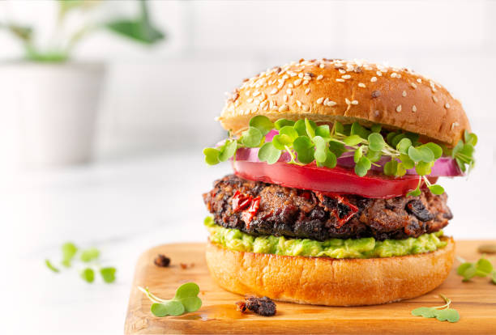

Preparation Time: 20 minutes
Difficulty Level: Easy
Veg Burger is a popular fast food made with a crispy vegetable patty, fresh vegetables, and soft burger buns. It is quick to prepare and very tasty.
This dish is perfect for snacks or light meals and can be made easily at home.
Add cheese slice for extra taste. Toast buns with butter for better flavor.